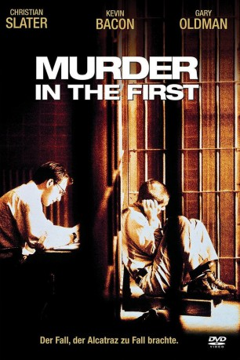
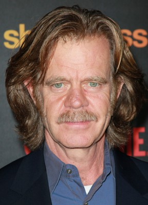
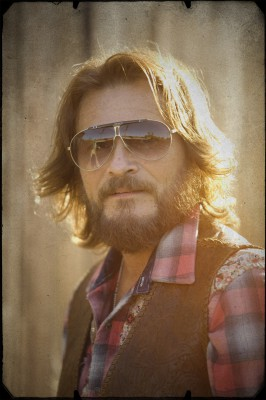
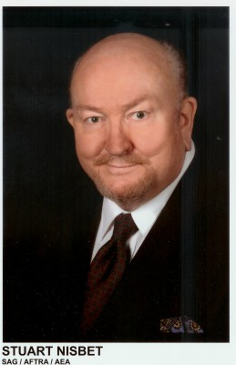

#2833 Lebenslang in Alcatraz
Alternativ: Murder in the First
 
 IMDB-Wertung: 7.3 / 10
IMDB-Wertung: 7.3 / 10  Metascore: 0
Metascore: 0 
Der verurteilte Dieb Henri Young (Kevin Bacon) wird auf die Gefängnisinsel Alcatraz in der Bucht von San Francisco gebracht. Hier erwartet ihn der sadistische stellvertretende Direktor Glenn (Gary Oldman), der Young gleich bei einem Fluchtversuch erwischt. Die Strafe: Young landet im dunklen Kerker - für drei Jahre! Aus der Isolationshaft entlassen, ersticht Young bei der ersten Gelegenheit einen Mitgefangenen, den er für seinen Verräter hält. Dafür soll er zum Tode verurteilt werden. Anwalt Stamphill (Christian Slater) nimmt sich des
Jahr: 1995
Dauer: 117 Minuten
FSK: 16
Land: USA Studio: Warner Bros.Tonspuren: DD2.0 - ,
Untertitel:
Auflösung: 1080p (1920x1080) Größe: 7946 MB
Genre: Thriller, Drama
Regisseur: Marc Rocco
Drehbuch: Dan Gordon
Soundtrack: Christopher Young
Darsteller:
 Christian Slater als James Stamphill
Christian Slater als James Stamphill Kevin Bacon als Henri Young
Kevin Bacon als Henri Young Gary Oldman als Milton Glenn
Gary Oldman als Milton Glenn Embeth Davidtz als Mary McCasslin
Embeth Davidtz als Mary McCasslin-  William H. Macy als D.A. William McNeil
 Stephen Tobolowsky als Mr. Henkin
Stephen Tobolowsky als Mr. Henkin Brad Dourif als Byron Stamphill
Brad Dourif als Byron Stamphill R. Lee Ermey als Judge Clawson
R. Lee Ermey als Judge Clawson- Mia Kirshner als Adult Rosetta Young
 Stefan Gierasch als Warden James Humson
Stefan Gierasch als Warden James Humson Kyra Sedgwick als Blanche, Hooker
Kyra Sedgwick als Blanche, Hooker- Charles Boswell als Derek Simpson, Former Alcatraz Guard
 George Maguire als Inmate #1
George Maguire als Inmate #1-  Douglas Bennett als Inmate #3
-  Stuart Nisbet als Harve
- Gary Ballard als Alcatraz Guard Swenson
- Sonny King als Alcatraz Guard Wimer
- Brian Leckner als Alcatraz Guard
 Time Winters als Alcatraz Guard
Time Winters als Alcatraz Guard James Keane als Alcatraz Guard
James Keane als Alcatraz Guard- Robert Lee als Newsreel Reporter
 Bill Barretta als Man on the Street
Bill Barretta als Man on the Street Eve Brenner als Winthrop's Secretary
Eve Brenner als Winthrop's Secretary- Tory Christopher als Public Defender , uncredited
- William Cleere als Prisoner , uncredited
- James Anthony Cotton als Alcatraz Guard , uncredited
 Charles Cyphers als Bailif , uncredited
Charles Cyphers als Bailif , uncredited Laird Macintosh als Reporter , uncredited
Laird Macintosh als Reporter , uncredited- Mary Mackey als Prison Guard's Wife , uncredited
- Daniel Mandehr als Alcatraz Guard , uncredited
- Joseph Quinn Simpkins als Reporter , uncredited
- James A. Swan als Alcatraz Guard , uncredited
- Nicole Vigil als Restaurant Patron , uncredited
 Erick Vinther als Gaurd #1 , uncredited
Erick Vinther als Gaurd #1 , uncredited- Ben Slack als Jerry Hoolihan
- Alex Bookston als Alcatraz Doc
- Richie Allan als Jury Foreman
- Herb Ritts als Mike Kelly
- David Michael Sterling als Inmate Rufus 'Ray' McCain
- Michael Melvin als Inmate Arthur 'Doc' Barker
- Nick Scoggin als Inmate #2
- Joseph Richards als Inmate #4
- Julius Varnado als Inmate #5
- Tony Barr als Winthrop
- Randy Pelish als Alcatraz Guard Wimer
- Neil Summers als Alcatraz Guard Whitney
- Eddie Bowz als Alcatraz Guard
- Lance Brady als Alcatraz Guard
- Michael Merrins als Alcatraz Guard
- Ray Quartermus als City Jail Guard
Datei: X:\1995\Lebenslang in Alcatraz (1995, FSK16, 1920x1080).mkv seit 22.12.2015
Festplatte: HD 1992-1995
 Es gibt insgesamt 85 Filme in der Gruppe '1995'
Es gibt insgesamt 85 Filme in der Gruppe '1995'